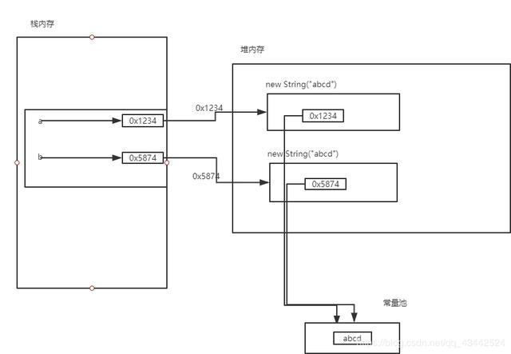

简介：
==
==是比较两个变量的值，如果是基本数据类型，那么就是比较的基本数据的大小值
int a=1;
int b=1;
System.out.println(a==b);
以上图中：==比较的就是上面两个内存块中的值，都是1，所以是true
但是如果存储的是引用类型，其实比较的还是变量本身所存储的值，我们都知道， 变量存储引用类型其实存储的只是引用对象的地址作为值存储到变量中，那么当用== 判断时，比较的就是这两个地址值了，所以说==比的是两个变量所存储的值，
至于这个值是什么类型的，就看放什么了
以上图中：==比较的就是上面两个内存块中的值，都是1，所以是true
但是如果存储的是引用类型，其实比较的还是变量本身所存储的值，我们都知道， 变量存储引用类型其实存储的只是引用对象的地址作为值存储到变量中，那么当用== 判断时，比较的就是这两个地址值了，所以说==比的是两个变量所存储的值，
至于这个值是什么类型的，就看放什么了
User a = new User();
User b = new User();
System.out.println(a==b);
在上图中，a和b存的就是一个引用对象，在这时判断a==b时，比较的也是a和b所存储的值，
可以看出，a里面存的是0x1234，b里面存放的是0x5874,很明显不相等，所以是false
而当使用==比较字符串时：
String a="abcd";
String b="abcd";
System.out.println(a==b);
这时，a和b存储的是同一个常量字符串，地址也一样，所以是true。
String a=new String("abcd");
String b=new String("abcd");
System.out.printlnl(a==b);
如果通过创建对象的方式创建字符串，那么流程就会向上图一样，a和b里面所存放的值就不一样了，a和b 比较就是false
equals()
JAVA当中所有的类都是继承于Object这个超类的，在Object类中定义了一个equals的方法，equals的源码是这样写的：
public boolean equals(Object obj) {
//this - s1
//obj - s2
return (this == obj);
}可以看到，这个方法的初始默认行为是比较对象的内存地址值，一般来说，意义不大。所以，在一些类库当中这个方法被重写了，如String、Integer、Date。在这些类当中equals有其自身的实现（一般都是用来比较对象的成员变量值是否相同），而不再是比较类在堆内存中的存放地址了。
所以说，对于复合数据类型之间进行equals比较，在没有覆写equals方法的情况下，他们之间的比较还是内存中的存放位置的地址值，跟双等号（==）的结果相同；如果被复写，按照复写的要求来。
/* String s1 = "a";
String s2 = "b";
String s3 = "c";
String s4 = "abc";
String s5 = s1+s2+s3;
System.out.println(s4 == s5);
System.out.println(s4.equals(s5));
*/
String s1 = "a" + "b" + "c";
String s2 = "abc";
System.out.println(s1 == s2);
System.out.println(s1.equals(s2));地址值的话，由于String是常量，存放于常量池中。而Java中对于常量有常量优化机制，所以没有注释的部分，在编译时候，就是将abc相加的结果赋值给s1，又发现常量池中已经有了abc，所以s1和s2指向的是常量池中的同一个abc，而注释的部分，由于是变量相加，运行时会在常量池中创建新的abc，所以是两个不同的abc。
文章到此，就结束了！小架在这里分享一些面试题
需要可以加我的交流群：772300343 获取哦！
最后谢谢大家的观看！
我是小架，我们下篇文章见！